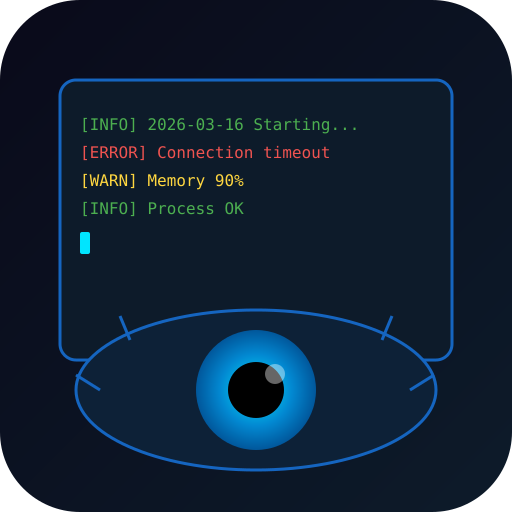
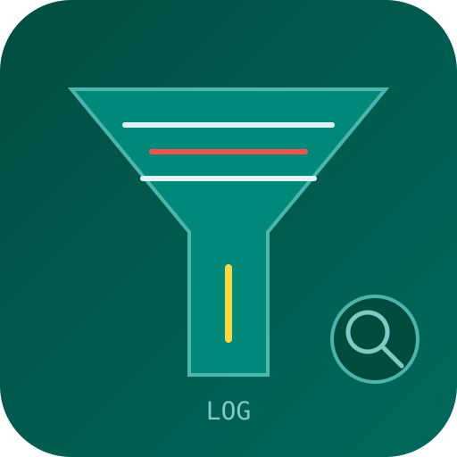
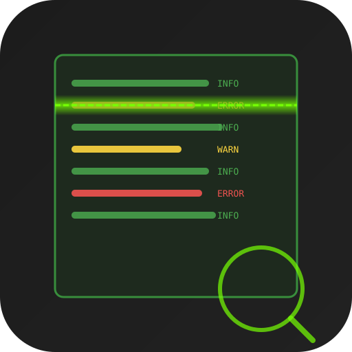
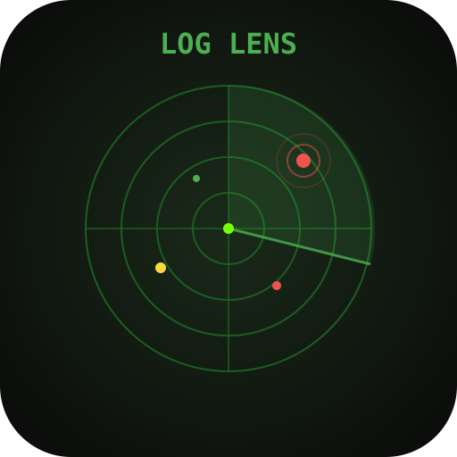
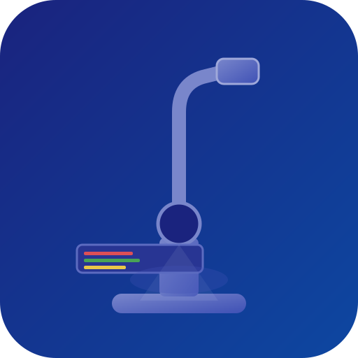
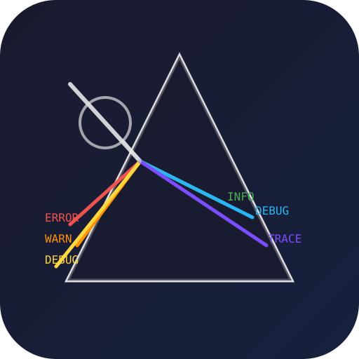
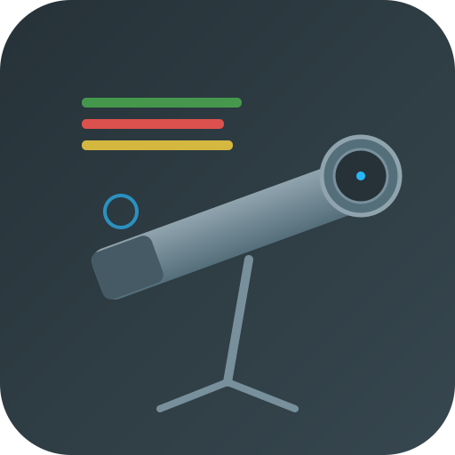
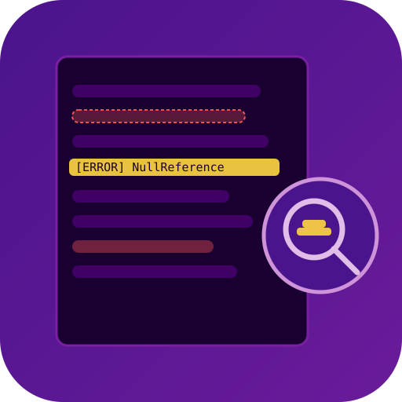
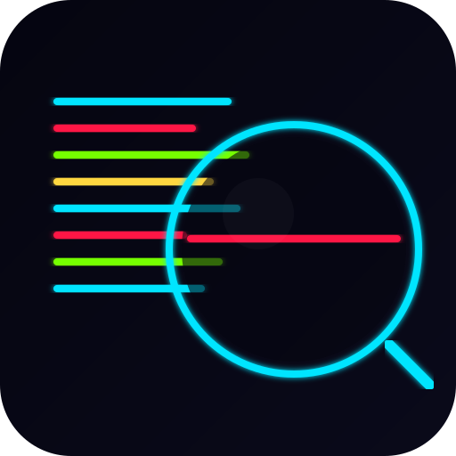

candidate_01_magnify_log.svg
candidate_01_magnify_log.svg
candidate_02_eye_terminal.svg
candidate_03_filter_lines.svg
candidate_04_scan_beam.svg
candidate_05_radar_log.svg
candidate_06_microscope_data.svg
candidate_07_prism_colors.svg
candidate_08_telescope_data.svg
candidate_09_highlight_search.svg
candidate_10_neon_search.svg